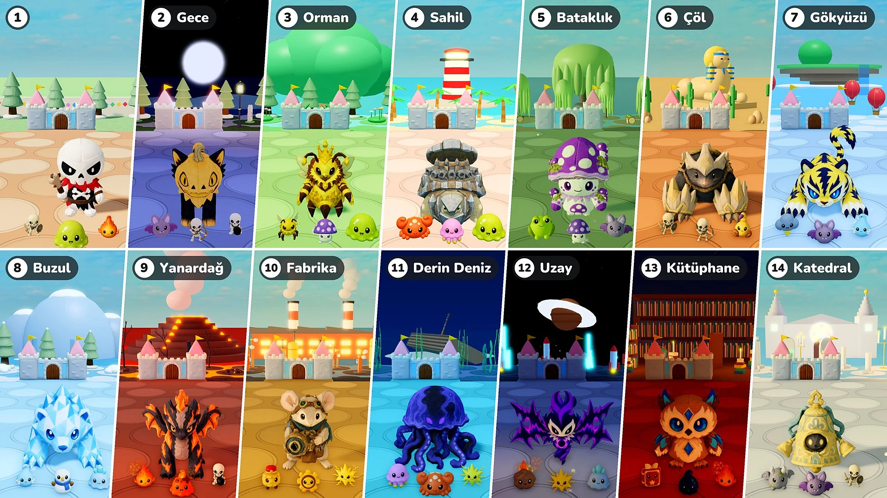

Sezon 2 · Güncelleme 07 · 10 Kasım

Kale Savunması
- Aşamalar: Artık her 10 tur bir aşama. Aşama 1 eskisi gibi kasaba; Aşama 2'den itibaren her aşama, kendi ışığı ve havası, zemini ve süsleri, kendi canavarları, elitleri ve patronları olan ayrı bir yer. Son yerden sonra yerler Aşama 2'nin yerinden yeniden başlar.
- Patronlar: Her 10 turda bir patron daha → her zaman tek patron; eskiden eklenen patron sayısı kadar elit onunla birlikte girer (15. ve 20. turlarda 1, 25. ve 30. turlarda 2 …). Aşama 2'den itibaren patronlar ve elitler o yerin peluşlarıdır. Balkraliçe de artık patron olarak gelebilir.
- Elitler: Elitler artık 1,15 kat daha büyük. Aşama 2'den itibaren Canları her aşamada %50 artar ve düşürdükleri yıldız 10 → 10 × aşama numarası olur (Aşama 2'de 20, Aşama 3'te 30 …).
- Yeni canavarlar: Yerlere 16 yeni canavar eklendi (Yarasa · Yengeç · Denizanası · Zehirli Kurbağa · Akrep · Fırtına Bulutu · Kırağı Ruhu · Kardan Adam · Buz Balçığı · Lav Balçığı · Kurmalı Asker · Dişli · Göktaşı · Büyü Kitabı · Mürekkep Damlası · Gargoyl). Ansiklopedi'deki Canavarlar ve Patronlar sekmeleri artık aşamalara göre ayrılıyor.
- Özellik Takviyesi: Peluş seçilen turda artık Özellik Takviyesi çıkmaz.
- Çağrılanlar: Özellik Takviyeleri'nin çağrılanlara uygulanmaması sorunu düzeltildi. Artık Balkraliçe peluşunun arılarına, Filizkuş peluşunun ağacına ve “Ayna İkizi” eşyasına da peluşlara olduğu gibi uygulanır; bir çağrılan sahadayken seçilen Özellik Takviyesi de hemen uygulanır.
- 2× hız: Duraklatma düğmesinin yanına “×2” düğmesi eklendi. Basınca savaş iki kat hızlı ilerler; yeniden basınca normal hıza döner. Peluş ve takviye seçme süresi ile avatarının yürüyüşü aynı kalır. “Birlikte oyna” modunda kim basarsa bassın tüm oyun değişir.
- Kale Canı: Kalenin Can çubuğu büyüdü ve Can sayıları çubuğun hemen yanında görünür.
Aşamalar ve yerler
Aşama 2'den itibaren yerler, canavarları ve patronlarıyla. Bir yerin Patron ya da Büyük Patron olarak gelen peluşları, o yerin elitleri olarak da gelir.
- Aşama 2 · Gece: Yarasa · İskelet Okçu · Bombacı İskelet — Patron: Blissfox · Pofuduk — Büyük Patron: Dreadfox · Pumpcat
- Aşama 3 · Orman: İşçi Arı · Zehirli Mantar · Balçık — Patron: Çamkirpi · Balreçel — Büyük Patron: Balkraliçe — Elitler: Filizkuş
- Aşama 4 · Sahil: Yengeç · Denizanası · Balçık — Patron: Cocoblin · Taşbağa — Büyük Patron: Rocoblin · Demirbağa
- Aşama 5 · Bataklık: Zehirli Kurbağa · Zehirli Mantar · Yarasa — Patron: Mudpug · Zehir Salyangoz — Büyük Patron: Boghorn · Mantarcık
- Aşama 6 · Çöl: İskelet Savaşçı · İskelet Okçu · Akrep — Patron: Bonis · Yumuşpati — Büyük Patron: Bonix · Çelikpati
- Aşama 7 · Gökyüzü: Fırtına Bulutu · Yarasa · Kırağı Ruhu — Patron: Voltis · Aurosansar — Büyük Patron: Voltiger · Griffion
- Aşama 8 · Buzul: Kırağı Ruhu · Kardan Adam · Buz Balçığı — Patron: Glassy · Shardfin — Büyük Patron: Polarrock · Prismlance
- Aşama 9 · Yanardağ: Kor · Lav Balçığı · Bombacı İskelet — Patron: Flamo · Ashgon — Büyük Patron: Flammonyx · Embergon
- Aşama 10 · Fabrika: Kurmalı Asker · Dişli · Kıvılcım — Patron: Mouseball · Tıkır Çark — Büyük Patron: Optimouse · Obscor
- Aşama 11 · Derin Deniz: Denizanası · Yengeç · Kıvılcım — Patron: Hydris · Frico — Büyük Patron: Serenis · Abyzel
- Aşama 12 · Uzay: Göktaşı · Kıvılcım · Buz Balçığı — Patron: Voidren · Echowing — Büyük Patron: Voidling · Noisewing
- Aşama 13 · Kütüphane: Büyü Kitabı · Mürekkep Damlası · Kor — Patron: Melty · Briarowl — Büyük Patron: Candric · Crystowl
- Aşama 14 · Katedral: Gargoyl · Yarasa · İskelet Savaşçı — Patron: Lilupi · Çıngırak — Büyük Patron: Radiant · Çanavar